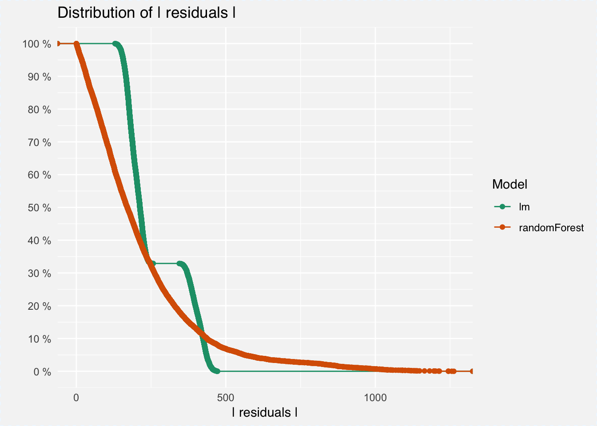
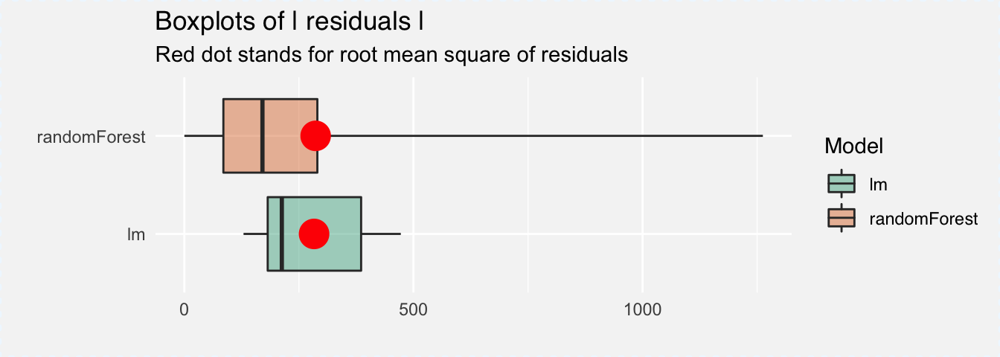

As you may remember from previous chapter root mean square of residuals is similar for both considered models. Does it mean that these models are equally good?
predicted_mi2_lm <- predict(apartments_lm_model, apartmentsTest)
sqrt(mean((predicted_mi2_lm - apartmentsTest$m2.price)^2))## [1] 283.0865predicted_mi2_rf <- predict(apartments_rf_model, apartmentsTest)
sqrt(mean((predicted_mi2_rf - apartmentsTest$m2.price)^2))## [1] 279.5858The function model_performance() calculates predictions for validation data and differences between model predictions and supplied labels y.
The generic print() function returns quantiles for these differences.
## 0% 10% 20% 30% 40% 50% 60%
## -472.3560 -423.9131 -398.2811 -370.8841 161.2473 174.0677 184.1412
## 70% 80% 90% 100%
## 195.8834 209.2460 221.4659 257.2555## 0% 10% 20% 30% 40% 50%
## -1292.16082 -391.75106 -203.37119 -92.17187 -11.94746 54.56748
## 60% 70% 80% 90% 100%
## 107.09344 157.82057 215.14554 285.62067 719.58132The generic plot() function shows reversed empirical cumulative distribution function for absolute values from quintiles. This function presents fraction of residuals larger than x. The figure below shows that majority of residuals for random forest is smaller than residuals in linear model. But the small fraction of very large residuals affects the root mean square.
(#fig:global_explain_ecdf)Comparison of residuals for linear model and random forest
Use the geom = "boxplot" parameter for the generic plot() function to get alternative comparison of residuals. The red dot here stands for the root mean square.
(#fig:global_explain_boxplot)Comparison of residuals for linear model and random forest
